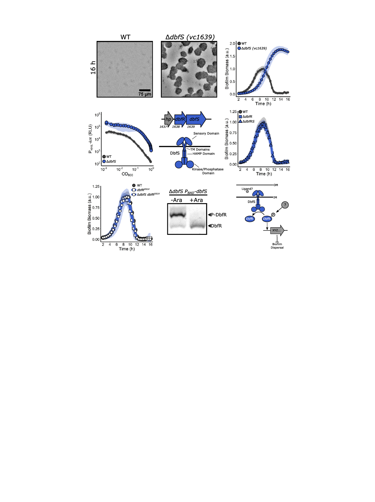

A
B
C
D
E
F
G
Fig. 2. A two-component system composed of DbfS (HK) and DbfR (RR) controls V. cholerae biofilm dispersal. (A) Representative images at 16 h and
quantitation of biofilm biomass over time measured by time-lapse microscopy for WT V. cholerae and the ΔdbfS (i.e., Δvc1639) mutant. (B) The corresponding
PvpsL-lux output for strains and growth conditions in A over the growth curve. (C, Top) Operon structure of the genes encoding the DbfS-DbfR two-component
system. (C, Bottom) Cartoon of the domain organization of DbfS. (D) As in A for the ΔdbfR (i.e., Δvc1638) strain and for the ΔdbfS ΔdbfR double mutant. (E)
As in A for the dbfRD51V and ΔdbfS dbfRD51V strains. (F) Representative Phos-tag gel analysis of DbfR-SNAP in the absence (−Ara) or presence (+Ara) of DbfS.
Fucose was added to repress DbfS production in the uninduced samples. A phosphorylated protein migrates slower than the same unphosphorylated protein.
(G) Proposed model for the DbfS-DbfR phosphorylation cascade regulating biofilm dispersal. OM, outer membrane; IM, inner membrane. In all biofilm
measurements, n = 3 biological replicates and n = 3 technical replicates, ± SD (shaded). For vpsL-lux measurements, n = 3 biological replicates, ± SD (shaded).
The Phos-tag gel result is representative of n = 3 independent biological replicates.
It is possible that phospho-DbfR also controls other genes in-
volved in suppressing biofilm dispersal.
DbfS is well conserved in the vibrio genus; for example, in
Vibrio vulnificus and Vibrio parahaemolyticus, DbfS has, respec-
tively, 64% and 60% amino acid sequence identity to V. cholerae
DbfS. In genera closely related to vibrio, such as allivibrio and
photobacteria, the dbfS gene exists in an identical operon orga-
nization, and the encoded protein shows high amino acid se-
quence identity (∼55 to 65%) to V. cholerae DbfS. In many of
these cases, dbfS is annotated as phoQ, encoding the well-studied
cation-regulated HK from enteric pathogens, including Escher-
ichia coli and Salmonella. However, BLAST analysis of the DbfS
protein sequence against that from E. coli K-12 revealed limited
homology to PhoQ, with 32% amino acid sequence identity (E
value = 1e−41) and with the region of lowest similarity in the
predicted ligand-binding domain. We tested whether the ligands
that control PhoQ signal transduction also regulate DbfS-DbfR
they do not. Thus, DbfS and DbfR are not functionally equiva-
lent to PhoQ and its cognate RR, PhoP, respectively, and DbfS
responds to an as-yet undefined stimulus to regulate biofilm
dispersal.
Matrix Disassembly Mediates V. cholerae Exit from Biofilms. The
second group of mutants in our screen harbored insertions in the
gene encoding the calcium-dependent periplasmic protease
LapG that degrades outer-membrane–spanning adhesive pro-
teins and in the gene specifying the extracellular polysaccharide
lyase RbmB that degrades the VPS component of the biofilm
matrix (25–27). The ΔlapG strain exhibited slightly lower peak
biofilm biomass compared to WT, with a short delay in the onset
of dispersal, and ∼55% of its biomass remained at 16 h (Fig. 3A
and Table 1). The ΔlapG and the WT strains had similar vpsL-
lux expression patterns (Fig. 3B), consistent with LapG playing
no role in repression of matrix production but rather functioning
downstream in matrix degradation. The LapG mechanism is
known: when c-di-GMP concentrations are high, the FrhA and
CraA adhesins are localized to the outer membrane, where they
facilitate attachments important for biofilm formation (Fig. 3C)
(28, 29). Under these conditions, LapG is sequestered and
inactivated by the inner membrane c-di-GMP–sensing protein
LapD (28). When c-di-GMP levels fall, LapD releases LapG,
and LapG cleaves FrhA and CraA, facilitating cell detachment
from biofilms (28). Our results are consistent with this
Bridges et al.